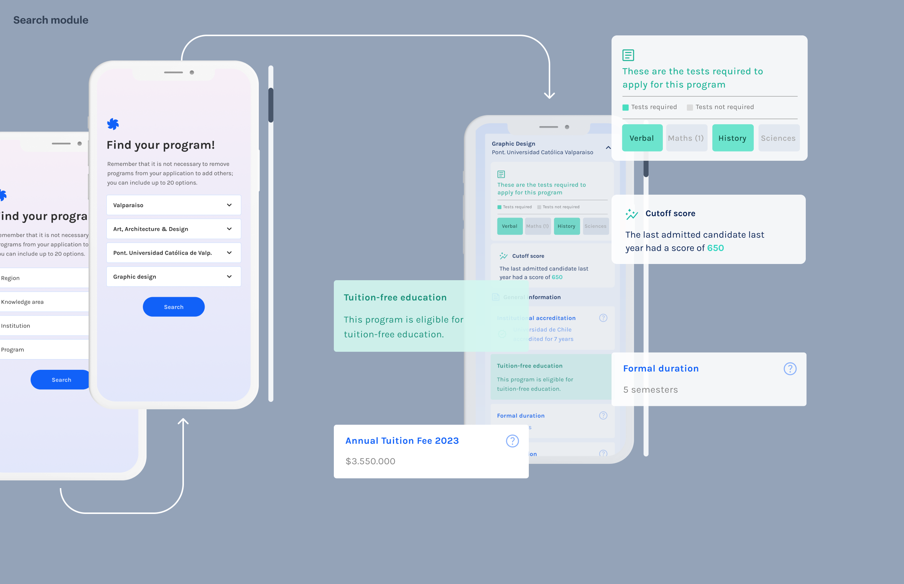
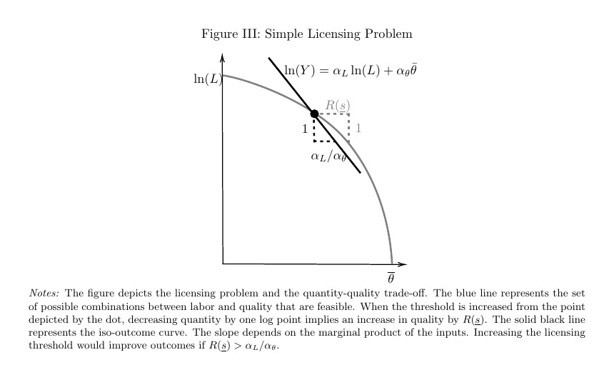
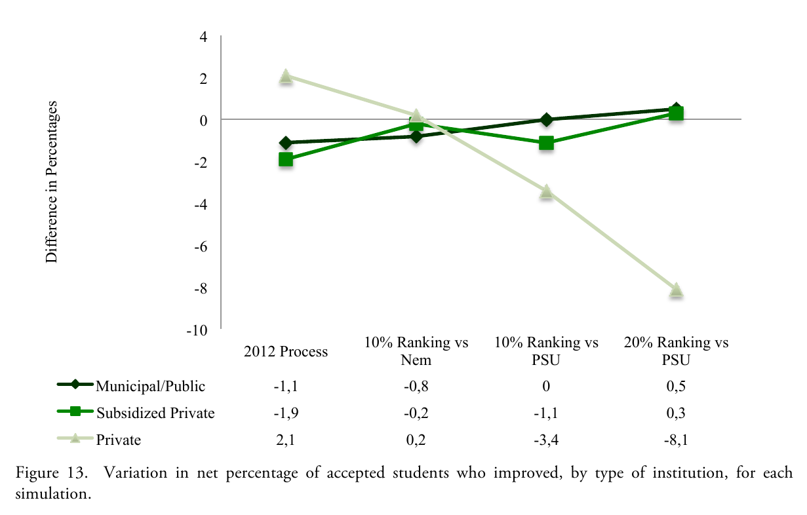
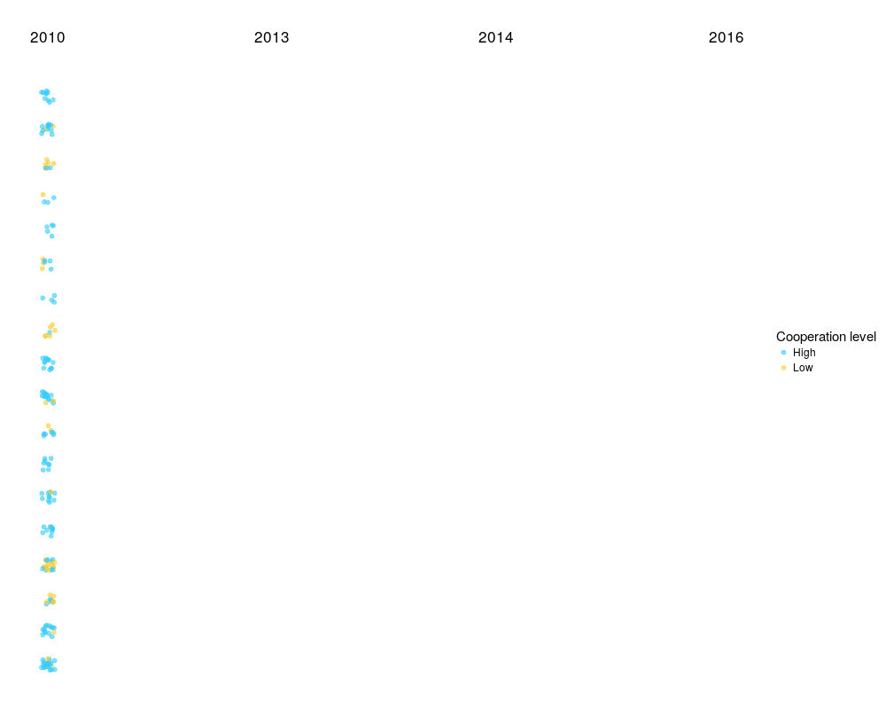
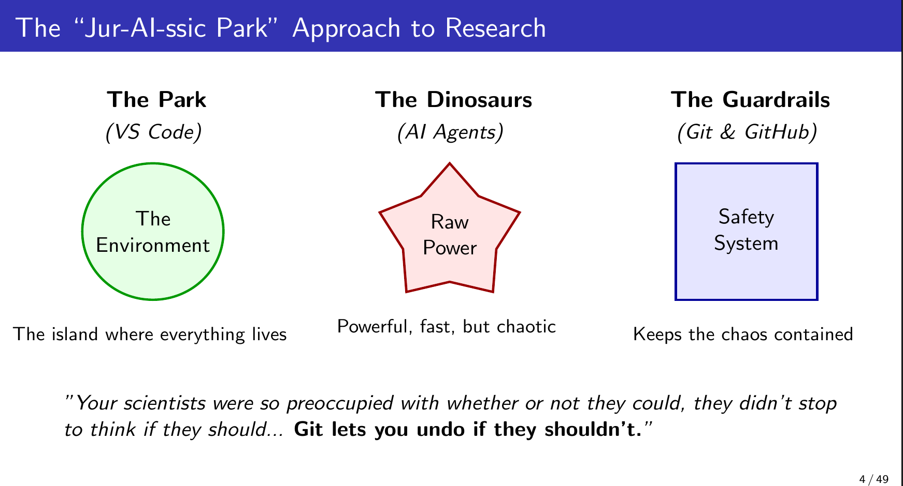

About
I am an Assistant Professor in the Department of Economics at the W. P. Carey School of Business at Arizona State University.
I am an Applied Economist working on Empirical IO/Market Design, Education Economics, and Labor Economics. I broadly study market design policies in practice in the context of matching markets. My current research focuses on how dynamic considerations and imperfect information can affect the design of matching markets, change the performance of assignment mechanisms used in many countries worldwide, and impact agents' outcomes.
Research
Working Papers
Dynamic College Admissions, with I. Ríos.
[See paper (new draft!)] [See electronic companion]
Reject and Resubmit (resubmitted!), Econometrica.

College Application Mistakes and the Design of Information Policies at Scale, with I. Ríos, A. Fabre, and C. Neilson.
[See paper (new draft!)]
Revise and Resubmit, Journal of Political Economy.

Physicians’ Occupational Licensing and the Quantity-Quality Trade-Off, with J. P. Atal, P. Muñoz, and C. Otero.
[See paper]

Do “short-list” students report truthfully? Strategic behavior in the Chilean college admissions problem, with I. Ríos.
[See paper]

Selected Publications
Improving the Chilean College Admissions System, with R. Cominetti, I. Ríos and G. Parra. First place, Doing Good with Good OR - Student Paper Competition (2018).
[See paper]
Operations Research, 2021.

Work In-Progress
Hybrid Dutch auctions and Toxic bonds, with N. Bozzo, T. Mylovanov, and R. Vohra.
The Role of Study Habits on Academic Performance, with A. Affonso, A. Aucejo, and S. El Khoury.
Platform Complexities and their Implications for Application Mistakes, with I. Rios, M. Martinez , and C. Neilson.
The Effect of Automation on the U.S Labor Market under the Affordable Care Act, with H. Fang, and A. Shephard.
Other Publications
Effect of Including High-School Grades Rank in the Admission Process to Chilean Universities, with A. Mizala and I. Ríos.
[See paper]
Pensamiento Educativo, 52 (1), 95–118, 2015.

Hunter-gatherers maintain assortativity in cooperation despite high-levels of residential change and mixing, with K. Smith, I. Mabulla, C. Apicella.
[See paper]
Current Biology, 2018.

Other Working Papers
College admissions problem with ties and flexible quotas, with R. Cominetti, I. Ríos and G. Parra.
[See paper]

Code & Projects
My recent open source activity and contributions.
AI_workshop
ASU Workshop: Git, GitHub, and VS Code - Agentic AI for Project Management and Research Productivity. Complete reproducible research template with data analysis, LaTeX documents, and Makefile automation.
[View Repository]

Recent Activity
Contribution Activity
Education
Ph.D. in Economics
2015-2021 University of Pennsylvania
Master in Management and Public Policies
November 2013 University of Chile
B.A in Industrial Engineering
December 2011 University of Chile